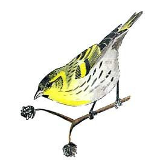

Siskin
Winter visitor to the reserve, easily overlooked if the calls are not recognised.

??/12/66 - Up to 25 Birds in mid December
17/03/68 - 2 Birds
09/01/71 - 2 Birds
20/03/71 - 4 Birds
??/12/71 - 5 to 8 Birds in late December
07/12/96 - Approximately 15 Birds
01/01/98 - 23 Birds in Alders
14/03/98 - 10+ Birds
20/12/98 - 3 Birds
07/03/99 - approximately 12 Birds
14/11/99 - 2 Birds
27/12/99 - Single Bird
23/01/00 - A singing male present. Small parties seen in the first 4 months and again in September
03/12/00 - 10 birds
2001 - A few singles apart from 6 on 31/12
2002 - 25+ on 02/02. Also 1 in song on 03/03 and 10 on 09/03
2003 - 8+ on 12/01, 3 on 16/11 plus a few ones or twos
2004 - 1 on 08/01, 6+ on 28/02, 5 on 19/03, 1 in song 08/04
2005 - The only record was of calls heard on Christmas day
2006 - 7 on 07/01 and 2 on 24/02
2007 - up to 3 in November/December
01/03/08 - 14+ A few other records of small numbers (up to 4)
2009 - several dates in the early part of the year with max 10 on 29/01/09
2010 - up to 8 recorded in the winter months
2011 - 10-20 for a week in early March, 6 flew over 25/12, otherwise a few ones or twos heard
2012 - The only records were of c.10 over on 25/11 and 1 heard 25/12
2013 - 8 records, max 30+ on 11/02
2014 - 9 records, max 10 on 06/02
2015 - Only one record of 'a few' on 04/10
2016 - 10 records covering February, March and April. Max 8 on 26/02 (a party of 8 was also reported from local gardens in February)
2017 - no reports
2018 - 3 on 18/03
2019 - 1 on 23/04, seen and heard in flight. 1 on 05/05 in south east hedgerow
2020 - no reports
2021 - 2 on 09/05 (AG)
2022 - no reports
2023 - 8 seen on east side on 17/03 (AG)
2024 - Call reported by Merlin app on 23/01 and one seen on 17/03
2025 - 2 in the SE feeder area on 03/01. 2 reports by the Merlin app of calls heard on 31/01 and 10/12